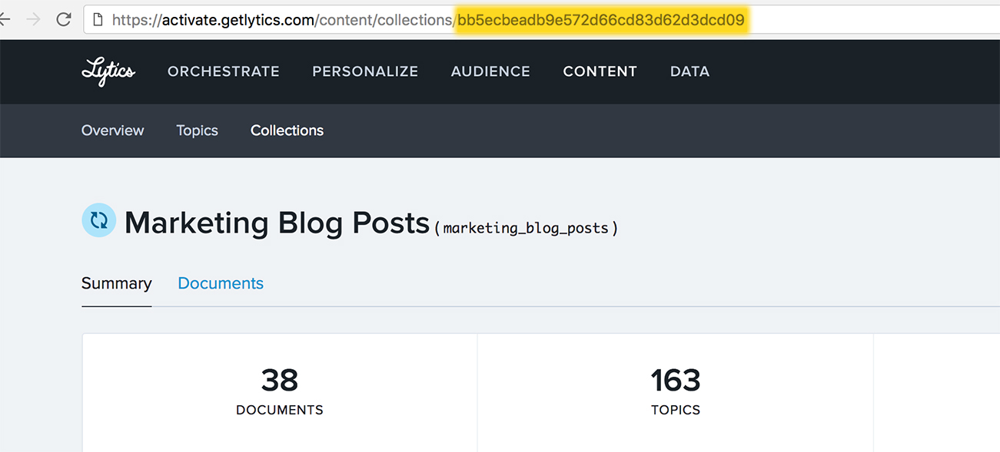

Instead of hand selecting content to show an audience, you can can create a module that will suggest content at a individual level, based on the viewer's content affinities in Lytics.
Note: only Message modules using a slideout, modal or modal layout and a variant of 3 support content recommendations.
recommend
Recommend controls any parameters necessary for making a content suggestions to a user using the Lytics content recommendation API.
recommend object |
||
| Key | Type | Behavior |
|---|---|---|
| collection | string | id of a content collection - the source list of content to recommend from** |
| rollups | array | if supplied, only allow recommendations of documents with topics from the specified topic rollups |
| visited | boolean | if false, only recommend an article the user has not previously visited. |
| shuffle | boolean | if true, randomly shuffle the recommendations to show a different recommendation on each page load |
| rank | string | must be one of popular (prioritizes most popular documents), recent (prioritizes most recent documents), or affinity (prioritizes based on user affinity - default) |
| display | object | additional settings to control the appearance of the recommendation (see below) |
** You can get the id of the content collection from the url of that collection in the Lytics App.

display object |
||
| Key | Type | Behavior |
|---|---|---|
| title | boolean | if false, do not show the title of the recommended content |
| image | boolean | if false, do not show the meta image of the recommended content |
| description | boolean | if false, do not show the meta description of the recommended content |
| author | boolean | if true, display the author of the recommended content |
| date | boolean | if false, display the published date of the recommended content |
| descriptionLimit | int | limit the number of characters in the meta description preview, a value of -1 removes the limit |
| locale | string | locale to be used to format the published date |
| dateOptions | object | options to be used to format the published date |
content
Content acts as a backfill/helper for the recommend key. If the content recommendation API cannot return a recommendation for the user (if they don't have any content affinity data or an error occurs), a default document may be provided.
object in content array |
||
| Key | Type | Behavior |
|---|---|---|
| url | string | url of the default document to recommend to the user |
| title | string | meta title of the default document |
| description | string | meta description of the default document |
| image | string | url of the meta image of the default document |
| author | string | full name of the author of the document |
| date | string | ISO 8601 formatted date that the document was published |
| default | boolean | required true if the content provided is to be used should the recommendation fail |
Note: The examples below will show the default content since the account used does not have content affinity set up.
Content Recommendation Modal - Live Preview

Content Recommendation Slideout - Live Preview